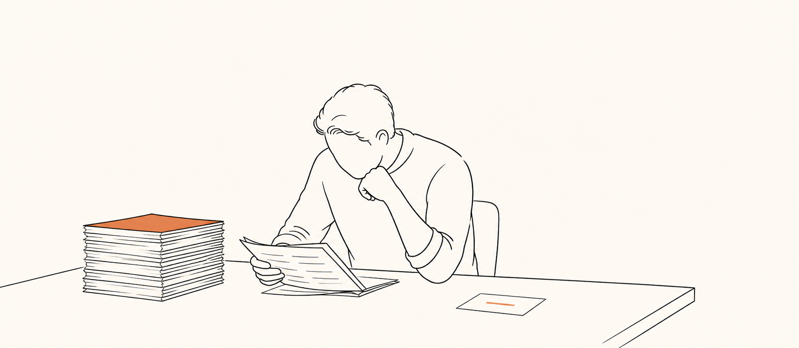
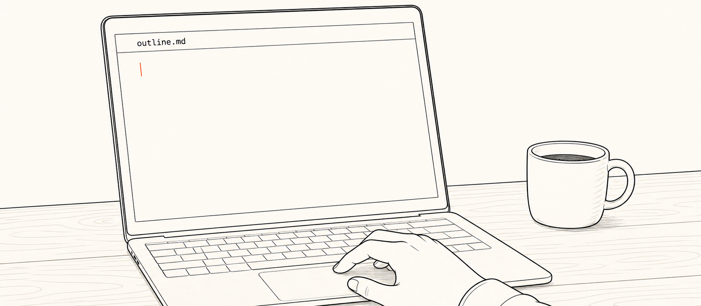
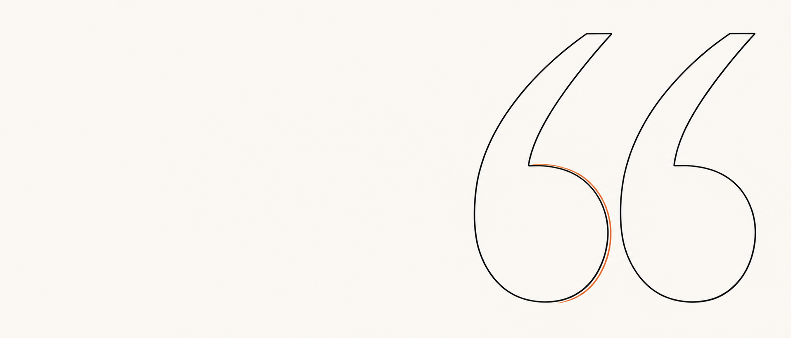
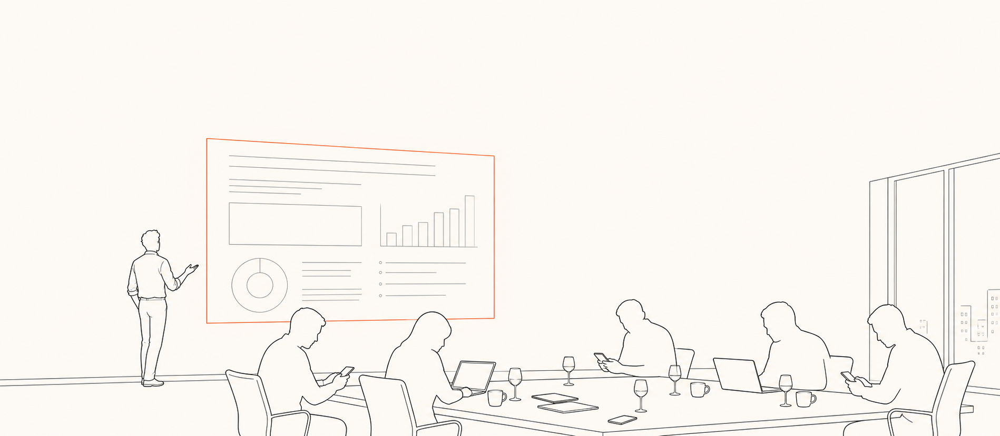

▸ Beat 3 · ~2 phút. 4 thứ đó là phần BẠN làm. AI lo cơ học SAU. Skill mình show Block 5, tới đó audience đã hiểu skill chỉ là cơ học cuối chuỗi.
Hôm nay mở cái gì
Thiết lập một luồng làm việc. Slide sau khoẻ hơn slide trước.
slide-studio loop · 00 → 10 → 20 → 50 → 40 ↺
▸ Beat 4 · ~2 phút. Self-referential tease: deck dựng live ngay đây = deck mở buổi 2. Không phải skill demo. Là 1 cái loop.
Block 2 · Slide tốt là gì · lecture · 30 phút
AI dựng slide 2 phút. Khác biệt = tinh luyện + tư duy kiến trúc, không ở công cụ.
Công cụ ai cũng có. Bộ lọc thì không.
▸ Beat 5 · ~1.5 phút. Bridge: bạn sẽ hỏi 'tinh luyện + kiến trúc là gì cụ thể'. 8 slide tới là phương pháp luận BCG/McKinsey, condensed từ slide-research.md.
Phần 1 · Design Drivers
Chốt 4 thứ TRƯỚC khi soạn slide. Cái thứ 4 — nơi trình bày — hay bị bỏ qua nhất.
▸ Beat 6 · ~3 phút. Nơi trình bày khác nhau, đậm-nhạt khác nhau. Hội trường = ít chữ ảnh to. PDF = chi tiết. Zoom = vừa phải. Cùng nội dung, 3 deck khác nhau. → refs/slide-method.html#drivers
Phần 2 · Quy trình
3 bước: Digest 20% → Insight → Narrative. Bỏ bước nào cũng ra slide rác.
▸ Beat 7 · ~2 phút. Nạp báo cáo thô vô AI rồi bảo "làm slide" = text wall vô hồn. Quy trình này phân biệt slide BCG vs slide tự sinh.
Đọc gấp 10 lần để viết 1 dòng tinh túy. Độ sâu đo bằng bộ lọc, không bằng lượng chữ.

[ image: s08-doc-10-lan ]
brand-flat-editorial · silhouette bent over đọc, stack 10 papers, 1 distilled card · cream + orange accent
5–7 dữ liệu cốt lõi
mỗi ý ≤10 từ
loại từ thừa
câu dài → mảnh nguyên tử
▸ Beat 8 · ~2 phút. Câu lock: "độ sâu đo bằng bộ lọc, không bằng lượng chữ." Chính slide này phải tinh đến mức đó mới chứng minh được. Mình rewrite 6 lần.
Tiêu đề = kết luận + đề xuất. KHÔNG phải nhãn chủ đề.
✗ topic title
Doanh thu Q3
✓ Action Title
Doanh thu Q3 −15%: dồn ngân sách Loyalty.
▸ Beat 9 · ~3 phút. HERO slide của Block 2. Action Title = un-googleable. AI không sinh ra được nếu bạn không quyết. Slide kế = 4 cách tìm ra title đó.
5 ống kính tìm Action Title. Không có ống kính nào, title sẽ generic.
▸ Beat 10 · ~4 phút. Click từng ống kính trong demo — cùng data ra title khác nhau. What/So-What ra title cứng; Gap-Drag ra title quantified; Then-What ra title sâu bậc 2; Anomaly ra title ngược logic; Ladder (mới) = move expert dùng để diễn giải fact thô. → refs/slide-method.html#insight
Phần 3 · Concept-to-Visual
Layout chọn từ BẢN CHẤTthông điệp. Không vẽ hoa mỹ.
▸ Beat 11 · ~2 phút. Quy tắc giết beige soup: đừng hỏi "vẽ gì cho đẹp"; hỏi "thông điệp này thuộc loại gì". Layout tự ra. → refs/slide-method.html#layouts
4 rule polish. Thiếu = nhìn rẻ tiền.
▸ Beat 12 · ~2 phút. 1 anchor / slide. Slide nào có 2 anchor là 2 slide. Click từng rule cho audience xem minh hoạ. Nếu Block 2 overrun: demote slide này xuống refs/ chỉ làm take-home; giữ S13 vì là QC cuối. → refs/slide-method.html#rules
SCR + Story Test: đọc riêng tiêu đề = ra cả mạch truyện.
▸ Beat 13 · ~2 phút. QC cuối. Chỉ chạy được nếu mọi title là Action Title (callback S09). Lock line: "Slide tốt = distill 20% → Action Title từ insight → layout đúng bản chất → đọc tiêu đề ra cả câu chuyện. AI dựng được hết SAU khi BẠN đã quyết 4 cái đó."
Block 3 · Research phase · 25 phút
Mở outline.md chưa research = nhìn trang trắng. Bài toán không nằm ở tool.

[ image: s14-blank-outline ]
brand-flat-editorial · laptop screen open outline.md blank w/ cursor, hand hesitating · cream warmth
▸ Beat 14 · ~1 phút. Cái fail thật của "làm slide chậm" không phải tool. Là ngồi xuống mà chưa có nguyên liệu. Block này lấy nguyên liệu.
AI move: WebSearch + qmd lục FB/LinkedIn 3-5 người đại diện. Tái dùng được. Buổi 2 dùng lại audience này, không research lại.
▸ Beat 16 · ~2 phút. Callback Driver #1 (S06). Giờ làm cụ thể bằng 1 file markdown. audience.md sống trong 00-decide/.
claims.md = chỗ 4 ống kính gặp nguồn thật. Action Title đẻ ra ở đây.
▸ Beat 17 · ~2 phút. Claim từ memory = hallucination = audience bắt được. AI move: WebSearch + Codex deep research (delegate). Chỗ Block 2 (S09-S10) gặp đời thật.
examples.md vault-first rồi mới web. qmd trước, hallucination sau.
▸ Beat 18 · ~2 phút. Research-first rule: vault có rồi đừng đi tìm lại. ▶ LIVE DEMO: mở Claude Code, generate 3 file cho deck buổi 2 ngay. ~15 phút.
Block 4 · Outline đi trước · 15 phút
outline.md = bảng lắp ráp 4 cột. Đủ 4 cột mới gọi outline.
▸ Beat 19 · ~5 phút. Research files = thùng phụ tùng. Outline = bảng lắp ráp. Mỗi heading PHẢI đã là Action Title (callback S09). Không phải đợi tới HTML mới đổi.
Bỏ outline → nhảy thẳng design = không edit sạch + Story Test fail.
✗ skip outline
tangled edit
Slide đẹp rồi muốn sửa 1 ý = phải sửa cả file. Story Test fail vì title không phải Action Title.
✓ outline-first
swap clean
Sửa outline → re-build HTML. 1-1 swap. Story Test chạy ngay ở outline time.
▸ Beat 20 · ~5 phút. ▶ LIVE DEMO: dựng outline.md cho deck buổi 2 từ 3 file research vừa làm. ~10 phút. Đọc xuôi tiêu đề = Story Test pass.

Slide không cần là PDF.
Không cần là Canva.
Không cần là PowerPoint. Slide có thể là một website.
Và đây là chỗ phép màu xảy ra.
▸ Beat 20a · ~30s. Để chữ trong vài giây trước khi sang. Đừng đọc lên. Để họ đọc.
Phép màu = mỗi deck nuôi deck kế qua retro → assets. PDF cũng đọc được. Nhưng không sửa nguyên-tử, không git-diff, không fork lại.
▸ Beat 20b · ~2 phút. Lock line: "Canva cho 1 deck rời. HTML cho 1 hệ thống deck biết học." Chỗ phép màu xảy ra. Không phải hover effect.
3 vai: Claude chạy loop · Codex là nhánh ảnh · Obsidian là nhà offline.
Claude Code
chạy loop · 00→50
Codex CLI
nhánh ảnh · tùy chọn
Obsidian
nhà offline · vault
▸ Beat 20c · ~1 phút. Codex KHÔNG bắt buộc. Không có thì để placeholder, drop ảnh vô images/, place-images.py fuzzy-match. Hand-off: "Mở Claude Code trong slide-studio →"
Cho skill ăn 2 thứ: style fork + content thô. Bận thì gom rồi quăng, skill tự rút.
▸ Beat 20d · ~3 phút. Flow tự nhiên cho người bận: 1 link deck mẫu + 1 thư mục đầy raw note (recording, PDF, paste) → skill chạy 6-bước SOP (research → distill → outline) → ASK bạn duyệt outline → fork + fill HTML. Bạn chỉ touch 1 gate. Skill làm 5 step cơ học còn lại.
Block 5 · Skill chạy build · 22 phút
1 lệnh chạy được. KHÔNG vì skill xịn, vì 4 file input BẠN đã viết trước.
▸ Beat 21 · ~5 phút. Terminal: `claude` trong slide-studio, gõ "build deck từ outline này". Hết. Trí tuệ ở 4 file input. Skill là router mỏng.
Style là FORK, không tả. Tả bằng chữ = AI drift mỗi deck một kiểu.
✗ tả prose
"moleskine hand-drawn, navy + lime"
3 deck → 3 look khác. Drift mỗi lần build.
✓ fork reference-deck
clone slides.html → swap content
3 deck cùng style. Cần look mới? Build 1 → promote thành reference.
▸ Beat 22 · ~5 phút. Callback Driver #3 (Brand) + 60-30-10, đóng gói trong 1 file deck thật, không trong prose. Reference-deck = visual system hoàn chỉnh.
SVG cho cấu trúc, ảnh cho cảm xúc. Chọn nhầm nhánh = đốt thời gian.
▸ Beat 23 · ~5 phút. Bài học đắt: đừng generate ảnh cho cái lẽ ra là sơ đồ. ▶ LIVE DEMO: 1 SVG slide + 1 Codex slide trong cùng deck. → refs/imagegen-prompts.html
Block 6 · Deploy · 5 phút · ▶ LIVE DEMO
Push GitHub Pages = live URL trong 30 giây. http.postBuffer 524288000 cho deck nhiều ảnh.
▸ Beat 24 · ~5 phút. ▶ LIVE DEMO: push thật, share live link qua QR. Gotcha: `git config http.postBuffer 524288000` nếu deck nhiều ảnh; `.nojekyll` ở root.
30 phút deck thứ N vì assets compound. KHÔNG vì skill nhanh.
▸ Beat 25 · ~5 phút. Gỡ ảo tưởng "có skill là nhanh". Compound = 40-assets/, không phải skill. 1 skill × 20 deck/năm = 40h+ saved. Nhờ assets compound.
2-3 phút · personal moment
"Mình bắt đầu care về slide từ một buổi pitch hỏng, vì khán giả phải đoán ý mình."

[ image: s26-pitch-hong ]
brand-flat-editorial · phòng pitch tối, audience không nhìn lên slide · cream + orange accent
▸ Beat 26 · ~2-3 phút. Câu chuyện thật, ngắn. Tony chọn 1 khoảnh khắc cụ thể. Image-placeholder ready — generate via Codex CLI hoặc drop file vô images/ rồi chạy place-images.py.
Soft tease · Buổi 2 · Monday 2/6 · 20:00
Buổi 2 = cùng loop, đổi domain. Bạn quyết offer/positioning/pricing, hệ thống lo cơ học.
▸ Beat 27 · ~2 phút. Hand-off không phải "skill khác". Là "cùng pattern". Monday 2/6, 20:00. Landing đó BÁN cohort này. Sang slide cuối.
▸ Beat 28 · last slide. CTA: mời mọi người quét QR tham gia Insider (go.bnqtoan.workers.dev/insider-cong-ty-mot-nguoi → track UTM) — cộng đồng build cùng nhau. Hold here cho Q&A, đừng auto-advance.